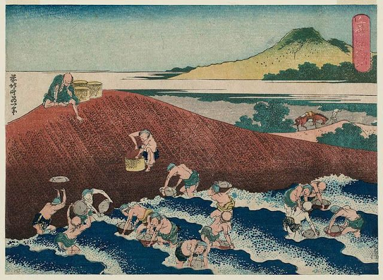

Sejarah
Berbagai teori telah dikemukakan untuk menggambarkan
perkembangan budaya visual Jepang sebagai pola siklus
asimilasi, adaptasi, dan reaksi. Terkadang beberapa gambar
menjelaskan periode di mana karakteristik seni Jepang
original yang sangat unik berkembang. Misalnya, selama
abad ke-10 dan ke-11 periode Heian, karena kontak politik
ekstensif dengan China berhenti, ada konsolidasi dan
pengembangan ekstensif gaya lukisan dan tulisan khas
Jepang.Pengaruh besar estetika Zen Cina yang menandai
budaya periode Muromachi (1338–1573) dengan selera lukisan
monokrom, dan pada awal periode Tokugawa (1603–1867) dengan
genre warna-warni mencolok, dan lukisan dekoratif yang merayakan
mekarnya budaya asli negara yang baru bersatu.
Karakteristik
Studi mengenai seni Jepang sering diperumit oleh definisi dan harapan yang
ditetapkan pada akhir abad ke-19 dan awal abad ke-20, ketika Jepang
mulai membuka diri ke Barat. Kesempatan interaksi yang meningkat secara dramatis
dengan budaya lain tampaknya membutuhkan filter yang sesuai dari
prinsip-prinsip estetika Jepang. Disamping itu, sejarawan seni dan arkeolog
Jepang mulai membangun metodologi untuk mengkategorikan dan menilai
sejumlah besar bahan mulai dari jenis tembikar, hingga cetakan balok
kayu. Diformulasikan sebagian dari penilaian ilmiah kontemporer dan
sebagian dari sintesis generalis antusias, teori-teori tentang
karakteristik budaya Jepang terutama yang lebih khusus, dan seni Jepang yang tidak
terduga tergantung dari selera dan waktu.
Seni Bersumber Dari Keseharian

Setelah Perang nin (1467–1477), Jepang memasuki periode gangguan politik,
sosial, dan ekonomi yang berlangsung selama lebih dari satu abad. Di negara
bagian yang muncul di bawah kepemimpinan Keshogunan Tokugawa, agama yang
terorganisir memainkan peran yang kurang penting dalam kehidupan masyarakat,
dan sebagian besar seni yang bertahan merupakan seni sekuler yang menggambarkan
keseharian penduduk Jepang.
Modernisasi Seni Jepang
Maju ke tahun 1980-an, dunia seni terjun ke pos modernisasi, yang juga merupakan
periode ketika seniman Jepang mulai membuat dampak yang lebih besar di dunia seni
internasional. Batas antara tradisional dan modern perlahan kabur saat seniman baru
menghadirkan ekspresi baru, didorong oleh arus utama dan budaya pop.
Tahun 1990-an, bagaimanapun, menjadi titik paling penting dalam seni kontemporer Jepang.
Sebuah generasi baru muncul, dengan Takashi Murakami dan Yoshitomo Nara yang disebutkan
di atas sebagai pemimpinnya. Jepang menyaksikan apa yang disebut gerakan 'superflat'
dipelopori oleh Murakami yang menggabungkan estetika seni pop dan budaya kawaii.
Namun, seniman-seniman ini lebih banyak menemukan kesuksesan di luar negeri daripada
di negara mereka sendiri, karena masyarakat seni lokal lebih mengarah pada seni tradisional
daripada modern.